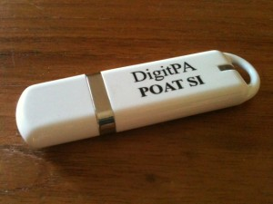
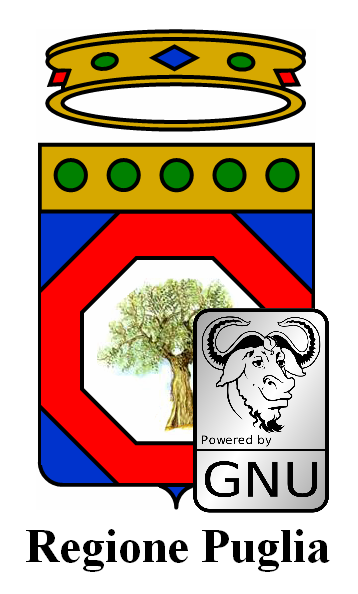
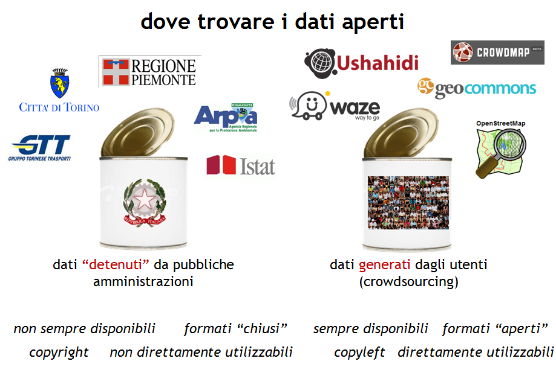
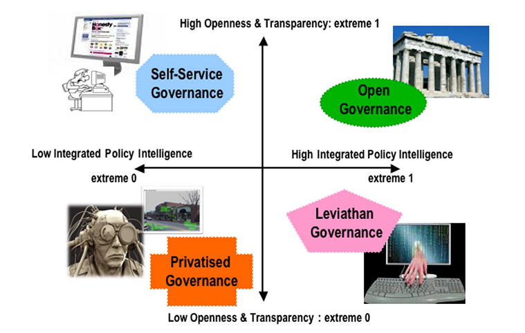
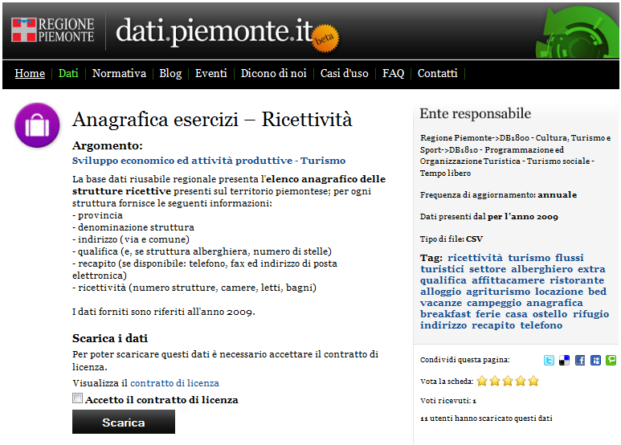
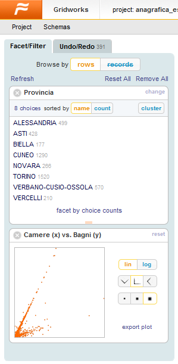
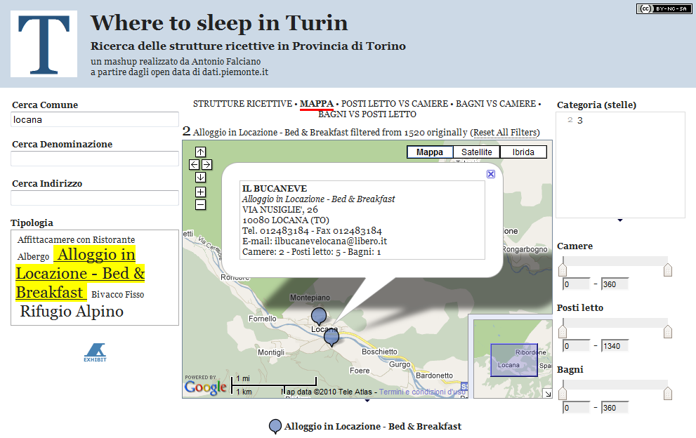
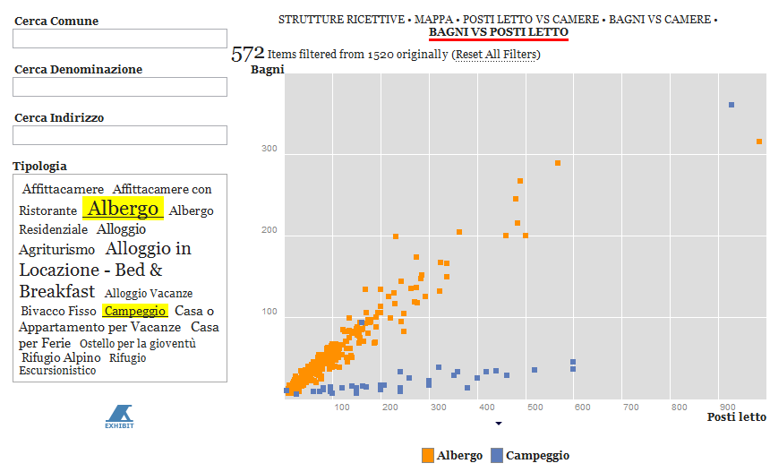

21 luglio, 2011 | di Pietro Blu Giandonato
Lo scorso giugno è stato approvato dalla Giunta Regionale pugliese un terzo disegno di legge sull’open source, dal titolo “Norme sul software libero, accessibilità di dati e documenti ed hardware documentato”, che va ad affiancarne altri due, uno a firma di alcuni consiglieri datato 16/02/2011 e l’altro del 11/02/2011 sempre proposto dalla G.R. e del quale avevo parlato in un precedente articolo, tentando di suggerire alcune modifiche volte ad integrare il provvedimento con il concetto di “dati aperti” e la loro conseguente valorizzazione e sostegno da parte della amministrazione regionale. Ad oggi, nonostante siano stati contattati tutti i consiglieri e lo stesso Presidente Vendola, non abbiamo ricevuto alcun cenno di riscontro.
Arriva ora questo terzo DdL (scaricabile da qui), abbastanza differente nella sua impostazione rispetto ai due precedenti, e sotto molti aspetti migliore. Provo a spiegare brevemente perché.
L’articolo 4 definisce come “archivi elettronici” tutti i dati digitali della PA regionale, la quale deve permetterne l’accesso gratuito mediante protocolli e formati aperti e specifiche libere, così come l’estrazione di dati e il relativo riuso (questione sollevata da Lorenzo Benussi in un suo precedente commento). Interessante poi l’ultimo comma, che esclude la possibilità di avvalersi di soluzioni di “cloud computing” se non sotto il diretto controllo della stessa PA. E in un momento come questo, nel quale i dubbi proprio sui servizi “in the cloud” sono parecchi, è una decisione comprensibile.
Nell’articolo 5 viene espressamente definita la “esclusività” dell’utilizzo da parte della PA di formati aperti e liberi così come la promozione dell’impiego di software open source. A tale proposito, al successivo articolo 7 vengono esplicitamente adottate le licenze GPLv3 e AGPLv3. Sebbene per quanto riguarda i dati, non ci sia ancora una licenza aperta accettata universalmente, nella proposta di legge non si fa alcun riferimento alla controversa IODL, sostenuta anche se non con specifici provvedimenti legislativi dal Governo italiano.
Secondo l’articolo 8 la Regione predispone un “Piano triennale di informatizzazione” che definisca le strategie dell’Ente in ambito informatico e individua una struttura di progetto (con tutta probabilità la società in-house Innova Puglia SpA) che si occuperà dell’attuazione del piano, come pure del rispetto degli obblighi previsti dalla stessa legge.
Altro strumento interessante previsto dall’articolo 11 è il Programma triennale promosso dalla Regione, finalizzato alla promozione di progetti di ricerca, sviluppo e produzione relativi al software libero e all’hardware documentato (singolare concetto introdotto con l’art. 14 e del quale francamente non mi è chiaro il significato) coinvolgendo il mondo delle imprese e della ricerca.
E con l’articolo 12 la Regione vuole favorire, promuovere e incentivare, nei limiti delle proprie competenze, i principi stessi della Legge Regionale e la promozione del software libero, la formazione al suo utilizzo e la diffusione dei valori etici e culturali ad esso legati. Azioni che vanno a supportare il concetto di “cittadinanza attiva”, che secondo il successivo articolo 13 la Regione Puglia intende sostenere proprio mediante l’uso di software libero e accesso ai dati.
In conclusione, mi pare di poter dire che questo terzo DdL sia di gran lunga migliore rispetto ai due precedenti, e che abbia di fatto recepito il concetto di dato aperto e libero, costituito nell’articolo 3 dall’insieme delle tre definizioni “specifica libera”, “protocollo libero” e “formato libero”. Allo stesso modo, il principio di “riuso” – sebbene tra le definizioni dell’art. 3 sia riferito al solo software – come ho già accennato prima riguardo l’articolo 4 viene chiaramente esteso anche ai dati.
Ciò che possiamo ora augurarci è che questo DdL possa superare il vaglio delle Commissioni Consiliari, giungere in Consiglio Regionale e venire approvato e convertito in legge nel più breve tempo.
Ovviamente il DdL è perfettibile, e ci piacerebbe che TANTO possa diventare un luogo di discussione nel quale poter raccogliere eventuali suggerimenti utili al suo miglioramento, magari da poter poi sottoporre all’attenzione della stessa Giunta Regionale pugliese con una audizione in Commissione Consiliare. Per chi fosse interessato, è possibile seguire l’iter del provvedimento sulla specifica pagina del Consiglio Regionale pugliese.
Posted in Dati | 9 Comments »
16 giugno, 2011 | di Pietro Blu Giandonato
Oggi ho potuto seguire a Bari il seminario organizzato da DigitPA dal titolo “Il nuovo CAD: opportunità per i cittadini, adempimenti per le amministrazioni”.
Fa parte di un ciclo di incontri nell’ambito del Programma Operativo di Assistenza Tecnica Società dell’Informazione (POAT-SI) con il quale si vogliono presentare le opportunità e gli obblighi insiti nel nuovo CAD.
E’ stato un interessante momento di confronto, durante il quale i circa 60 presenti, tra funzionari delle PA, operatori del settore dell’informazione e qualche curioso come me, hanno tempestato di domande e posto molti dubbi ai relatori.
Per quanto mi riguarda, dopo aver ascoltato la prima presentazione “Gli elementi fondamentali della riforma del CAD” di Elena Tabet (qui il PDF delle slide), ho fatto un intervento sottolineando che il Codice (artt. 52 e 68) di fatto parla di “formati aperti” come modalità di interscambio tra le amministrazioni pubbliche, trascurando la necessità – se non proprio obbligo – da parte della PA di rendere disponibili i propri dati, sempre in formati aperti, al pubblico.
Ho comunque spezzato una lancia a favore del MiPA, sottolineando come la definizione della IODL sia un ottimo passo avanti. Ma ho anche fatto notare come tra i gruppi di lavoro (vedi slide 28-34) che si occuperanno di elaborare le regole tecniche sulle numerose questioni annoverate dal CAD in seno a DigitPA, nessuno di fatto si occuperà di open data.
Mi è stato risposto che in effetti al momento non sono previste azioni che vadano a definire regole tecniche o tempi che le PA dovranno rispettare per aprire i dati al pubblico.
Ma proprio questa mancanza di fatto lascia la realizzazione dell’open government alla totale discrezione delle singole PA che lo hanno tra i propri obiettivi prioritari. Molto poche al momento, come abbiamo già accennato sempre qui su TANTO (Piemonte pionieri e Puglia in stand-by), e talvolta in maniera alquanto farraginosa, come racconta Gerlando Gibilaro in un suo approfonditissimo articolo, parlando della Regione Siciliana.
It’s a long way to the top if you wanna open data…

Posted in Eventi | 3 Comments »
24 maggio, 2011 | di Pietro Blu Giandonato
La legislazione sul software aperto e libero (FOSS o FLOSS che dir si voglia) in Italia è piuttosto indietro, con un Disegno di Legge (il n. 1188) presentato nel lontano febbraio 2002 da un manipolo di senatori (primo firmatario Fiorello Cortiana dei Verdi) e da allora incagliato in esame alla 1a Commissione Affari Costituzionali. Ben otto anni dunque, e nulla lascia sperare che qualcosa possa cambiare.
In realtà, a livello governativo sono state avviate alcune azioni, ma che non hanno finora portato a risultati concreti. Sempre nel 2002 fu istituita con Decreto Ministeriale una apposita “Commissione per il software a codice sorgente aperto nella Pubblica Amministrazione” il cui lavoro portò alla pubblicazione di una “Indagine conoscitiva sul software open source“. Una successiva Direttiva del dicembre 2003 “Sviluppo ed utilizzazione dei programmi informatici da parte delle PA” sancì la possibilità da parte della Pubblica Amministrazione di acquisire ed utilizzare programmi informatici “open source”. Da febbraio a luglio 2004 fu attivo poi un gruppo di lavoro, volto a proseguire i lavori della c.d. “Commissione Meo” del 2002 e che di fatto produsse un documento finale con proposte articolate tra le quali l’istituzione di un “Centro di competenza OSS per la PA” contretizzatosi nel famigerato “Osservatorio sull’open source” nato in seno al CNIPA (oggi DigitPA). Esso raccoglie le esperienze delle Pubbliche Amministrazioni italiane nell’uso di software open source, come pure una sorta di elenco dei “fornitori” di servizi legati al FOSS, al quale chiunque può registrarsi. Di fatto, ad oggi l’Osservatorio appare né più né meno che un mero elenco di “esperienze” e “fornitori”, informazioni peraltro non più aggiornate dal 2007.
Insomma, buone le intenzioni, ma davvero scarsi i risultati, almeno finora. E se andassimo a fare due conti su quanto saranno costati Commissione, Gruppo di lavoro e Osservatorio stesso, forse ci morderemmo anche le mani in qualità di contribuenti…
Una iniziativa da segnalare è senza dubbio quella attuata dal Formez con la Italian Open Data Licence (IODL) v1.0, nata nell’ambito del progetto MiaPA, l’applicazione di “social check-in” per segnalare la performance degli uffici pubblici da parte dei cittadini. Formez auspica l’uso della IODL da parte delle amministrazioni pubbliche che vogliano imboccare concretamente un percorso di open government.
Un ulteriore riferimento legislativo di fondamentale importanza per tutto quanto concerne i dati digitali – e del quale le iniziative legislative regionali devono tenere conto – è costituito dal D.Lgs. 07/03/2005 n. 82 e s.m.i. il cosiddetto Codice dell’Amministrazione Digitale, che purtroppo però trascura totalmente proprio la materia degli open data.
Ottime notizie da alcune Regioni… e non solo
Svariate illuminate Regioni hanno comunque deciso già da anni di dotarsi di leggi proprie per favorire l’uso del software open source. L’Emilia-Romagna ha emanato la L.R. 11/2004, il Friuli Venezia Giulia la L.R. 8/2006, l’Umbria la L.R. 11/2006, il Veneto la L.R. 19/2008, il Piemonte la L.R. 9/2009 e la Toscana la L.R. 54/2009. La Lombardia ha in essere un progetto di legge presentato a luglio del 2010, così come la Sardegna ha un proprio disegno di legge in cantiere risalente a ottobre 2008. Recente poi è la notizia (grazie Antonio) che addirittura il Consiglio Comunale di Fabriano ha deciso di “abbracciare” il software open source, dimostrando che anche una piccola amministrazione locale è capace di grandi rivoluzioni a livello gestionale.
Come riferimento per aggiornamenti riguardo la normativa, sia nazionale che regionale, potete prendere certamente a riferimento l’Associazione per il software libero.
Anche il Presidente Vendola nella mia Puglia ha annunciato mesi fa la presentazione di un disegno di legge sul pluralismo informatico, teso a promuovere e diffondere il FLOSS (così definito nel DdL) a livello regionale. Si tratta di una iniziativa che apparentemente stride, e anche parecchio, con il precedente protocollo d’intesa firmato da Vendola con Microsoft verso fine 2010 per la costituzione di un centro di competenza per promuovere l’innovazione. Il Partito Pirata italiano e l’Associazione per il Software Libero hanno sin da subito contestato l’accordo, chiedendo a Vendola di rispondere ad una lettera aperta. Cosa che lui ha fatto, motivando dal suo punto di vista le ragioni dell’iniziativa. Interessante notare come la vicenda abbia destato molti interessi e dubbi anche all’estero.
Pur lasciando molto perplesso anche me, non voglio qui riprendere la discussione, già avviata nei contesti che vi ho segnalato. Sembra però che le critiche abbiano indotto Vendola a cercare di capirne un pò di più sulla questione. E’ infatti sempre di dicembre scorso la notizia riportata da Punto Informatico che Vendola abbia avuto un incontro con Richard Stallman, guru del software libero, per “fare un approfondimento con alcuni dei protagonisti più importanti della battaglia per il software libero” e addirittura abbia pensato di coinvolgerlo nella revisione proprio del DdL sul pluralismo informatico. Ad oggi però non sappiamo se l’incontro abbia avuto degli sviluppi di qualche tipo.
In Puglia si potrebbe osare di più…
Bene, con tali favorevoli presupposti e grande lungimiranza da parte di Vendola, mi viene spontaneo rilanciare e cogliere l’occasione per capire se a Nichi stia a cuore anche la grande questione riguardante i dati aperti.
Di open data se ne è parlato ampiamente, in varie forme e con illustri personaggi, anche durante il Festival dell’innovazione - ma soprattutto il contestuale Public Camp - entrambi organizzati proprio dalla Regione Puglia a Bari agli inizi di dicembre 2010.
Su TANTO seguiamo l’hype che ormai si è avviato sull’onda dell’open government e sugli open data da qualche tempo, e ovviamente come blogger cerchiamo non solo di far da volano a notizie e iniziative sul tema, ma anche di essere propositivi, con la realizzazione di mashup con dati aperti e liberi e la partecipazione diretta a eventi (ITN 2010 e il Gis Day 2010 di Palermo).

Ed è in quest’ottica che noi di TANTO vogliamo avanzare la proposta al Presidente Vendola e alla sua Giunta, di integrare il Disegno di Legge sul pluralismo informatico che stanno per presentare in Consiglio Regionale, con alcuni articoli che promuovano la diffusione di dati aperti e liberi nell’ambito dell’amministrazione regionale come pure in tutte le altre pubbliche amministrazioni pugliesi, dai Comuni alle Province. Penso ad esempio al grande valore aggiunto del quale potrebbero godere i cittadini con la diffusione in formato aperto e il libero utilizzo dei dati di monitoraggio delle componenti ambientali (aria, acqua, suolo) e dei grandi comparti come quello dei rifiuti. Del resto il Sistema Informativo Territoriale pugliese già consente da tempo lo scaricamento e la fruizione libera (sebbene manchi una chiara definizione della licenza d’uso) dei dati territoriali.
Perciò, qui di seguito proponiamo alcuni articoli da includere nel DdL sul pluralismo informatico, che riguardano proprio i dati aperti e liberi. Naturalmente si tratta di una proposta certamente perfettibile, ed è per questo che invitiamo tutti i nostri lettori e chiunque abbia interesse, ad avanzare proprie proposte per migliorarla. Il nostro obiettivo è quello di presentarle ufficialmente al Presidente Vendola, e se verranno mai accolte, la Regione Puglia sarebbe la prima a sancire legislativamente la diffusione di dati aperti e liberi. Il passo successivo sarebbe ovviamente quello di costruire un portale regionale, punto di riferimento istituzionale, analogamente a quanto fatto in maniera così lungimirante dalla Regione Piemonte con http://dati.piemonte.it
Il testo del DdL n. 5 del 10/02/2011 “Norme in materia di pluralismo informatico, sull’adozione e la diffusione del free libre open source software e open hardware e sulla portabilità dei documenti nella pubblica amministrazione regionale e locale” proposto dalla Giunta della Regione Puglia è reperibile sul sito web del Consiglio Regionale, nella sezione “Proposte di Legge” con Atto Consiliare n. 68. Sul medesimo sito, per chi volesse, è possibile seguirne l’iter istitutivo.
Qui di seguito proponiamo in maniera molto asciutta ed essenziale le poche modifiche al testo in discussione, che potrebbero dargli obiettivi ancora più ampi, unendo in maniera sinergica la promozione dell’utilizzo del FLOSS con la liberazione dei dati pubblici, in possesso proprio delle Pubbliche Amministrazioni.
Art. 1 – Finalità
Dopo le parole “nel rispetto della normativa statale in materia di informatizzazione della Pubblica Amministrazione” inserire le seguenti parole “e in particolare da quanto disposto dal D.Lgs. 07/03/2005 n. 82 e s.m.i.“.
Art. 3 – Definizioni
Inserire le seguenti definizioni:
q) per dati pubblici si intendono tutti i dati conoscibili da chiunque, così come definiti alla lett. n) del D.Lgs. 07/03/2005 n. 82 e s.m.i. I dati pubblici sono dati che non sono soggetti a limitazioni di privacy o sicurezza.
r) per dati aperti (o open data) si intendono quei dati organizzati in archivi che, nel rispetto delle condizioni così come definite alla lett. b), c) e d) del presente articolo, nonché al Capo V del D.Lgs. 07/03/2005 n. 82 e s.m.i., rispondono ai seguenti requisiti:
- sono resi direttamente disponibili ai chiunque, senza necessità di identificazione informatica, come disposto dal comma 3 art. 54 del D.Lgs. 07/03/2005 e s.m.i.;
- sono ricercabili per parole chiave o per ambito tematico mediante strumenti quali cataloghi o motori di ricerca;
- sono pubblicati così come raccolti alla fonte, con il medesimo livello di definizione e di dettaglio, non in forma aggregata o modificata;
- sono immediatamente disponibili, al fine di preservarne il valore, l’attendibilità e l’integrità;
- sono strutturati in modo tale da consentire il loro trattamento automatizzato da parte di elaboratori e macchine;
- sono disponibili in formati non proprietari, ovvero secondo standard aperti;
- non devono essere soggetti a copyright, brevetti, marchi di fabbrica o regole sul segreto commerciale, eventuali limitazioni sulla privacy e/o la sicurezza possono essere ammesse come disciplinate dalle leggi vigenti;
- indicano le metodologie di realizzazione adottate.
s) per formato proprietario (o chiuso) si intende qualsiasi formato di archivio dati le cui specifiche tecniche non siano di pubblico dominio o non siano disponibili gratuitamente, ovvero siano soggette a restrizioni basate su diritti d’autore.
Art. 6 – Raccolta e gestione dei dati da parte della Pubblica Amministrazione [in sostituzione degli artt. 6 e 6 bis]
1. Tutti i servizi telematici messi a disposizione dalla Pubblica Amministrazione Regionale e Locale devono rispettare rigorosi criteri atti a favorire i massimi livelli di accessibilità sia per i diversamente abili sia in termini di neutralità tecnologica.
2. La Pubblica Amministrazione Regionale e Locale, con riferimento ai dati pubblici dalla stessa raccolti e gestiti, adotta standard aperti, protocolli aperti e formati aperti, così come definiti alle lett. b), c) d) dell’art. 3, rispettando i criteri dei dati aperti così come definiti dalla lett. r) dell’art. 3.
3. La Pubblica Amministrazione Regionale e Locale in possesso di dati pubblici promuove la loro diffusione in forma di dati aperti, come definiti alla lettera r) dell’art. 3, con modalità che ne consentano la rintracciabilità dai motori di ricerca su internet e lo scaricamento dai siti web istituzionali delle Pubbliche Amministrazioni stesse assicurando la parità di trattamento tra gli utilizzatori.
4. La Pubblica Amministrazione Regionale e Locale si impegna affinché tutti i servizi messi a disposizione siano interoperabili, facciano uso di protocolli e formati aperti, e permettano, attraverso lo sviluppo di piattaforme applicative comuni, l’interazione e l’integrazione fra di loro.
5. La Pubblica Amministrazione responsabile dei dati, al fine di rendere effettivo l’utilizzo dei dati in suo possesso, designa il responsabile del procedimento per le richieste di utilizzazione dei dati e per rispondere alle denunce di violazioni dei principi di cui alla lettera r) dell’art. 3.
Art. 7 bis – Ulteriori obblighi della Pubblica Amministrazione allargata [nuovo articolo]
1. La Pubblica Amministrazione nella predisposizione dei bandi di gara, nonché nella selezione di progettisti, collaboratori e consulenti, richiede, con apposita clausola contrattuale, che il fornitore, il consulente o l’appaltatore del servizio fornisca i dati dallo stesso raccolti, nonché i pareri, le consulenze ed i progetti, oltre che nelle forme tradizionali, anche in formato digitale e con standard che ne consentano l’elaborazione da parte di elaboratori e la modificabilità da parte della Pubblica Amministrazione.
2. I dati detenuti dalle Pubbliche Amministrazioni Regionali e Locali, così come definito alla lett. m) del D.Lgs. 07/03/2005 n. 82 e s.m.i., ivi compresi i dati prodotti da software sviluppato da terzi, memorizzati in un formato proprietario per il quale le Pubbliche Amministrazioni Regionali e Locali detengono tutti i diritti, saranno convertiti in formati aperti entro due anni dalla data di entrata in vigore della presente legge.
3. I dati esistenti memorizzati in un formato proprietario, del quale la Pubblica Amministrazione Regionale e Locale non possiede i diritti, potranno continuare ad essere memorizzati ed elaborati in quel formato. Progetti e attività che continuano ad usare formati chiusi devono essere riesaminati ogni quattro anni, per determinare se il formato sia diventato aperto e, in caso contrario, se un formato appropriato aperto esista e possa essere adottato in luogo di quello proprietario.
4. In caso di progetti impegnati a convertire dati già esistenti da un formato proprietario in un altro formato, per quest’ultimo deve essere scelto un formato di dati aperto, a meno che non vi siano motivi tecnici o giuridici che lo impediscano.
5. In caso vengano resi pubblici dati esistenti, questi devono essere convertiti in formati aperti, tenendo conto delle situazioni descritte nei commi precedenti.
“Open data, tutti ne parlano, ma come si fa?”
Per rispondere a questa domanda, l’Associazione italiana per l’Open Government ha da poco messo online le “Linee guida per l’open data”, una sorta di vademecum indirizzato a tutti i soggetti che hanno seriamente intenzione di liberare i dati in loro possesso. Una agile cassetta degli attrezzi nella quale troviamo le definizioni fondamentali di open data e open government, perché passare agli open data, quali aspetti tecnici affrontare e le questioni giuridiche ad essi collegate.
Un’altra indispensabile risorsa da tenere presente è Making Your Data Open: a Guide di Open Data Commons, un progetto della Open Knowledge Foundation che ha come obiettivi proprio la diffusione del concetto di open data e il supporto per la loro adozione.
Da poco è stato inoltre lanciato APPSFORITALY, un contest organizzato da Associazione Italiana per l’Open Government, IWA e TopIX per la realizzazione di applicazioni basate su dati pubblici rilasciati da amministrazioni pubbliche. Ma se gli open data disponibili sono ancora così pochi, sarà difficile avere un buon numero di partecipanti.
Insomma, gli ingredienti ci sono tutti, le opportunità anche, la gente non manca… Quale migliore occasione dunque per la Regione Puglia affinché approvi il DdL e contribuisca concretamente a scatenare la creatività di tutti gli hacktivisti che ci sono in giro per l’Italia?
Posted in Dati | 13 Comments »
5 febbraio, 2011 | di Sergio Farruggia
La nostra società nel 2030. Uno studio per indicarci come sarà: se sapremo conquistarcelo. Rubo un titolo, nelle conclusioni si capirà perché.
Ho ricevuto recentemente la segnalazione di questo rapporto: Envisioning Digital Europe 2030: Scenarios for ICT in Future Governance and Policy Modelling. E’ un documento che riporta i risultati della ricerca svolta dall’Unità “Information Society” dell’Institute for Prospective Technological Studies del JRC, lavoro svolto nell’ambito del progetto CROSSROAD, A Participative Roadmap on ICT research on Electronic Governance and Policy Modelling.
“Forse non tutti sanno che…” con Governance and Policy Modelling il Settimo Programma Quadro della Commissione Europea per la R&S nel settore ICT ha voluto sollecitare l’esecuzione di progetti di ricerca in due campi complementari. E’ assai prevedibile –si legge nel Work Programme 2009-2010- che gli strumenti per la collaborazione on-line in futuro consentiranno a una percentuale ampia della popolazione di esprimere simultaneamente opinioni e punti di vista su problemi sociali (grandi o piccoli). Mentre tale scenario è già immaginabile, non esistono ancora modelli di governance, process flows e tool di analisi appropriati per comprendere, interpretare, rappresentare e valorizzare quelle forme di partecipazione collettiva al bene pubblico. Lo sviluppo di strumenti che abbraccino entrambi questi ambiti dell’ICT può contribuire a migliorare il processo decisionale pubblico, far sì che le politiche siano più efficaci, la governance più intelligente, anche grazie alle possibilità di arricchire continuamente le competenze, attraverso un apprendimento continuo nel corso dei processi di applicazione delle politiche stesse.
L’obiettivo generale di CROSSROAD ha riguardato quindi l’identificazione di tecnologie emergenti, di nuovi modelli di governance e di scenari di applicazione innovativi nel campo dell’ICT per la governance e la policy modelling. Gli scopi di questa ricerca sono riferibili all’Agenda digitale per l’Europa, l’iniziativa di punta della strategia UE 2020. Il progetto ha voluto fornire ai decisori politici impegnati nell’attuazione dell’Agenda uno strumento di consultazione, utile anche per contribuire alla definizione di una roadmap della ricerca ICT che vada oltre lo stato dell’arte e sia condivisa dalla comunità dei ricercatori e dalle comunità di pratica.
Per stimolarci a curiosare in un nostro futuro, non lontano, soprattutto su cui possiamo agire, gli autori c’invitano a riflettere, ci ricordano che quanto oggi è realtà poteva sembrare frutto di fantasia quando nasceva internet; di più:
“Se uno avesse previsto poi che, nel 2010, i bambini avrebbero potuto accedere liberamente alle immagini satellitari di ogni luogo della Terra, interagire con persone di tutto il mondo e effettuare ricerche tra trilioni di dati con un semplice click sul loro PC, sarebbe stato preso per pazzo” (pag. 9).
Ecco, di creativa follia mi sembra pervaso questo documento. Esso presenta una visione dell’Europa Digitale tra vent’anni, di una società in cui le Tecnologie per l’Informazione e la Comunicazione a supporto della governance e delle politiche potranno avere un ruolo rilevante e positivo. Evidenzia le principali linee di ricerca nel settore dell’ICT che dovranno essere guardate con attenzione e con quali modalità dovranno essere sviluppate per costruire una Europa Digitale aperta, innovativa e inclusiva nel 2030. Mostra anche come fronteggiare i rischi che potrebbero derivare da un uso improprio dell’ICT in quest’ambito.
Opportunità e minacce evidenziate attraverso quattro differenti scenari, riguardanti quella che potrà essere la società in cui vivranno i cittadini europei nel 2030, individuati seguendo una rappresentazione schematica rispetto a due variabili, ossia quale potrebbe essere:
- il sistema di valori sociali esistente, vale a dire più inclusivo, aperto e trasparente oppure esclusivo, fratturato e restrittivo,
- la risposta all’impiego delle tecniche di policy intelligence (parziale o completa; proattiva o reattiva), cioè come verranno utilizzati (e da quali soggetti) gli strumenti -abilitati dall’ICT- per l’elaborazione dei dati, la modellazione, la visualizzazione e la simulazione a supporto di strategie politiche pubbliche basate su valutazioni il più possibile razionali e critiche (evidence-based).
I quattro scenari individuati e analizzati in CROSSROAD sono graficamente indicati attraverso gli assi cartesiani del diagramma riportato qui a fianco. Spero di avervi incuriosito e avervi indotto almeno a una rapida lettura del rapporto. Sembrerebbe che lo scenario “Open Governance” sia da preferire, ma anch’esso presenta delle criticità, come riportato nella tabella di pag. 59.
La società reale europea nel 2030 non corrisponderà quindi a nessuno dei quattro scenari, così come sono stati descritti. Grazie però a questo esercizio, CROSSROAD ha elaborato una visione dell’Europa digitale tra vent’anni, proposta nel documento come una società in cui l’ICT per la governance e la policy modelling potrebbe giocare un ruolo positivo importante.
Penso che il capitolo di maggiore interesse per la Comunità Geomatica possa essere quello conclusivo. E’ la sezione del rapporto in cui, dopo aver chiarito quali saranno le principali problematiche che dovranno essere affrontate nei prossimi vent’anni nell’elaborazione e attuazione delle politiche pubbliche, sono esposti alcuni possibili indirizzi della ricerca nel settore dell’ICT per la governance e la policy modelling: ricerche che siano utili per orientare la società europea verso scenari auspicabili, evitando quelli meno desiderabili.
Un primo ambito dell’ICT su cui indirizzare la ricerca riguarda le tecnologie e le applicazioni per la gestione e l’analisi delle informazioni, per monitorare e simulare in tempo reale il comportamento di entità reali e virtuali (persone, cose, dati e informazioni). Gli autori ci ricordano che alcune compagnie di assicurazioni, avvalendosi di tali tecnologie, propongono ai propri clienti l’installazione a bordo delle auto di apparati che consentono poi di stabilire premi assicurativi basati sul comportamento del guidatore, piuttosto che sulla sua età, o sul suo sesso oppure ancora, la residenza. E’ plausibile -e auspicabile- che soluzioni analoghe siano adottate in altri domini, ad esempio legate alle politiche di assistenza sociale, dei trasporti, dell’energia, o altre ancora. Il settore pubblico potrebbe utilizzare questi strumenti per esaminare scelte differenti, in base al comportamento simulato o all’individuazione dei desideri d’individui, gruppi o della società nel suo insieme. Essi potrebbero quindi aiutare nella comprensione dei possibili risultati delle proposte politiche e dell’attuazione di alternative.
Un secondo campo della ricerca dovrebbe porre l’attenzione sulla crescente fruibilità di dati derivanti dall’enorme uso di sensori miniaturizzati e cablati in strutture fisiche (strade, case, ecc.). Quando tale disponibilità d’informazione sia abbinata a modalità di visualizzazione evolute, essa può avere sui decisori un impatto incredibile sulla percezione tempestiva dell’evoluzione di fenomeni d’interesse. Alcune applicazioni per incrementare la comprensione di situazioni in tempo reale, abbinate a tecniche di visualizzazione dei dati raccolti sono già utilizzate nel campo della logistica, per intervenire sulle rotte di trasporto delle merci, evitare –ad esempio- situazioni di congestione e quindi ridurre i costi di consegna. In conclusione, il rapporto raccomanda lo sviluppo di ricerche che –attraverso queste tecnologie- mirino a sfruttare l’enorme patrimonio di dati e fonti di conoscenze collettive del settore pubblico europeo.
Un terzo filone delle ricerche ICT nel campo della Governance and Policy modelling dovrebbe essere rivolto verso la crescente capacità di internet nel sostenere processi decisionali e pianificatori sempre più complessi e più a lungo termine. Il rapporto evidenzia che a questo fenomeno corrisponde la crescita di requisiti tecnologici connessi alle enormi risorse di archiviazione e elaborazione, associate ai sistemi software evoluti per la visualizzazione grafica delle analisi dei dati. Sono riportati due esempi riguardanti settori in cui queste potenzialità sono materia di ricerca. Il primo si riferisce ai possibili miglioramenti delle attività estrattive degli idrocarburi, grazie all’impiego di vaste reti di sensori, diffuse capillarmente nella crosta terrestre. L’altro pone l’accento sui benefici del monitoraggio dei parametri salienti di malati cronici, mentre questi continuano a condurre la loro vita normale: ciò può consentire ai medici di diagnosticare l’insorgere di situazioni critiche prima che queste s’aggravino.
In tale ambito, definito Policy intelligence and ICT-driven decision analytics, dovrebbero essere promosse ricerche riguardanti il web semantico, così come l’ottimizzazione degli strumenti ICT che agevolino la traduzione automatica, la modellazione dei processi, il data mining, la pattern recognition, le simulazioni basate sulla Teoria dei Giochi, gli strumenti di forecasting e back-casting, le tecniche di ottimizzazione goal-based.
La quarta traccia risultante dallo studio effettuato in CROSSROAD, definita come Automated mass collaboration platforms and real-time opinion visualization, rivolge l’attenzione sugli strumenti e le tecnologie ICT basate ed estrapolate dalla social computing e altre tecnologie future per la collaborazione in rete. Le ricerche in quest’ambito dell’ICT dovranno riguardare -ad esempio- strumenti che consentano di condividere informazioni e conoscenze, superando gli ostacoli dovuti a culture e a lingue diverse. Per favorire la partecipazione dei cittadini ai processi decisionali dovranno essere disponibili strumenti in grado di assicurare la capacità di monitorare l’intero processo del settore pubblico e controllare se, e come, i contributi proposti sono stati poi considerati. Processi che –grazie a queste tecnologie- potranno anche fare riferimento a modelli di governance collaborativi, strutturalmente e organizzativamente innovativi, in grado di consentire a gruppi d’interesse di formarsi, creare e aggregare informazione; imparare e condividere la conoscenza di gruppo accumulata, tenendone traccia. Tale complessità d’interazione tra singoli e gruppi –anche nella realtà virtuale- dovrà essere supportata da strumenti in grado di assicurare la gestione delle identità (anche multiple, pseudonimi, ecc.), la privacy, prevenire frodi, accessi non autorizzati, ecc.: insomma tenere conto dei requisiti necessari perché chi usa questi strumenti avverta fiducia in essi, ma nello stesso tempo sia orientato verso un loro uso responsabile.
Il quinto filone, denominato ICT-enabled data and process optimisation and control, prende spunto dalla possibilità di convertire dati (e analisi sui dati stessi) in istruzioni che -attraverso reti di attuatori- provvedono a modificare i processi. Come i sistemi che regolano i sistemi complessi rendono in molti casi superfluo l’intervento umano, si ipotizza che si possa aumentare l’efficienza e l’efficacia dei processi di governance e dei servizi rilasciati seguendo questa linea di sviluppo dell’ICT. Ciò avverrà ad esempio in maniera sempre più capillare nell’ambito della distribuzione di risorse energetiche o dell’acqua, attraverso l’installazione di contatori “smart” che mostreranno agli utenti in tempo reale l’andamento dei consumi e i relativi costi, consentendo una gestione dei prezzi più dinamica e orientando l’utilizzo consapevole di tali preziose risorse.
Infine, l’ultimo ambito dell’ICT verso cui le ricerche dovrebbero rivolgersi riguarda le applicazioni per la rilevazione di condizioni imprevedibili e l’attuazione di risposte immediate, tramite sistemi automatizzati che riproducono le reazioni umane, anche con livelli di prestazione notevolmente migliori. Tecnologie che si riferiscono a questo campo della ricerca, denominato Complex dynamic societal modelling systems, sono già applicate, ad esempio, dall’’industria automobilistica per lo sviluppo di sistemi in grado di rilevare il pericolo di collisioni imminenti e di evitare l’impatto. Alcune aziende ed enti di ricerca stanno sperimentando “piloti automatici” per i veicoli in rete, guidati in schemi coordinati a velocità autostradale. In altri settori si stanno testando sciami di robot in grado di manutenere strutture o ripulire ambienti da rifiuti tossici. Tutte questi sforzi hanno l’obiettivo di migliorare la sicurezza, ridurre rischi e costi. Mentre leggevo questo documento sono finito qua (giusto per non citare la solita Google car). Il rapporto evidenzia che alcune di queste tecnologie saranno già mature nei prossimi anni e potranno essere quindi utilizzate anche per applicazioni nell’ambito della governance e della creazione delle politiche pubbliche.
Le tecnologie, le discipline e quindi le competenze del mondo ICT coinvolte in questa prima roadmap sono veramente diverse e complesse. Come gli autori precisano, essa non rappresenta neppure un quadro esaustivo: quanto sia vasto il dominio della Governance e Policy Modelling si comprende sfogliando le pagine della sezione “Tassonomia” in Gov2Pedia, prezioso strumento per orientarsi in tale universo.
La lettura di questo rapporto aiuta a scoprire cosa c’è dietro (e anche oltre) la Digital Agenda for Europe. Per esempio, mi ha aiutato a comprendere meglio il commento di David Osimo al recente (15 dicembre scorso) European eGovernment Action Plan 2011-2015 (dalla stessa pagina si può accedere alla versione in italiano), piano per lo sviluppo di servizi digitali per gli europei, secondo concezioni innovative e a supporto della Digital Agenda.
Sì, va be’, e la Geographic Information? Non sarà sfuggita un’evocazione leggendo già le prime righe (le immagini satellitari accessibili liberamente anche ai bambini). Nel seguito, l’ho rinvenuta “incorporata” negli applicativi e nei servizi che potranno essere resi disponibili per tutte le aree dell’ICT segnalate come promettenti per la governance e la policy modelling.
Ciò che ora mi piacerebbe leggere, sarebbe un esame del posizionamento della Geoscience rispetto alla visione della Digital Europe nel 2030 proposta in questo documento, un’indagine sui contributi specifici della Geographic Information rispetto agl’indirizzi della ricerca nel settore dell’ICT illustrati nel rapporto. M’interesserebbe anche un approfondimento dei riflessi eventuali di tale visione sugli sviluppi del nostro settore (in risposta a nuovi requisiti, circa aspettative degli utenti, …). Quest’ultimo forse potrebbe essere utile per segnalare ulteriori idee per la ricerca, orientare le strategie per l’implementazione dei servizi, rendere anche più consapevole il nostro lavoro quotidiano.
Nel più recente Programma di Lavoro 2011-2012 del 7° Programma Quadro il tema governance e policy modelling è stato riproposto, sollecitando contributi che aiutino a affrontare “scenari futuri che coinvolgono complessità ancora maggiori e il coinvolgimento dei cittadini, in particolare rispondere alle esigenze delle giovani generazioni”. Può essere un’altra opportunità (il bando si è chiuso lo scorso 18 gennaio) per creare occasioni di dialogo tra il mondo dell’ICT nella sua globalità e il “regno” della GI, i cui confini si stanno dilatando (giusto qui una suggestione per l’urban planning policy, citato nel Work Programme 2011-2012). Potremo comprendere meglio in che modo la Geographic Information sia necessaria per implementare molte soluzioni per tale tema. Ma anche, per il presente, come seguire (e favorire) l’attuazione dell’eGovernment Action Plan anche “nel regno della GI”.
Parafrasando la raccomandazione assai condivisibile di Osimo ai nostri concittadini a Bruxelles “siate ambasciatori delle istanze italiane in Europa e siate disseminatori delle innovazioni europee in Italia”, vale anche un “presentiamo le istanze dell’Informazione Geografica italiane nel contesto dell’Agenda Digitale e siamo disseminatori delle innovazioni digitali nel nostro campo”. Sia in Europa, sia all’interno di una strategia digitale italiana, http://www.agendadigitale.org/.
Il diagramma degli scenari dell’Europa Digitale nel 2030 mi ha ricordato un altro grafico. Lo storico C.M. Cipolla (1922 -2000) nel suo Allegro ma non troppo, proponeva un diagramma per classificare gl’individui in base al loro comportamento. Suggerì di assegnare all’asse delle ascisse la misura dei danni o dei vantaggi che l’individuo procura a sé stesso (vantaggio positivo, danno negativo); mentre indicò che i danni o i vantaggi procurati agli altri fossero assegnati all’asse delle ordinate. Propose di chiamare l’insieme degli individui le cui azioni inducono valori positivi per entrambi tali parametri, come Intelligenti.
Posted in Entropia | No Comments »
29 ottobre, 2010 | di Antonio Falciano
Il processo di liberazione dei dati pubblici procede abbastanza lentamente in Italia, nonostante le prime lodevoli iniziative in tal senso (dati.piemonte.it, CKAN Italiano, Linked Open Camera), mentre in altri Paesi (USA e UK in primis) si tratta di un fenomeno già ampiamente consolidato, tanto da rivoluzionare radicalmente il tradizionale modo di intendere il rapporto tra cittadini e Pubblica Amministrazione. Si veda, ad esempio, il portale Challenge.gov, dove i vari dipartimenti esecutivi ed agenzie federali americani lanciano delle vere e proprie sfide ai cittadini sulle questioni più disparate, che vanno dall’ambiente alla sanità, dall’economia alla tecnologia, a fronte della risoluzione delle quali sono previsti premi di natura economica.
Challenge.gov is a place where the public and government can solve problems together.
Il clamoroso ritardo del Belpaese in materia di Open Data è imputabile a diversi fattori. Da un lato, persiste di fatto l’assenza di una forte e concreta volontà politica di innescare tale processo in tempi brevi. Dall’altro, tuttavia, si comincia a registrare una graduale presa di coscienza del notevole impatto positivo che la liberazione dei dati prodotti dalla PA è potenzialmente in grado di produrre in termini di trasparenza dell’azione amministrativa e, al tempo stesso, come valida opportunità di sviluppo economico nei vari settori dell’IT. Ampio merito va dato alla Regione Piemonte, che con il suo portale dati.piemonte.it, rappresenta finora l’unica PA italiana che, pur non essendo obbligata a farlo (come argomenta Gerlando Gibilaro in un suo recente post su InDiritto), ha predisposto un banco di prova utile per mostrare effettivamente cosa si può fare con i dati grezzi e qual è il loro potenziale intrinseco ancora tutto da esplorare. A tal proposito, recentemente il portale si è arricchito di un’ulteriore sezione dedicata ai casi d’uso dei dati finora rilasciati, ancora piuttosto limitati in numero, ma non per molto visto che i tempi sono più che maturi…
Infatti, dopo essere rimasti a guardare a lungo cosa accadeva oltremanica o oltreoceano, è giunto finalmente il momento di tradurre questa opportunità in azione! Pertanto, al di là delle etichette, civic hacker, hacktivisti o civil servant di tutta Italia mettiamoci anche noi in gioco, “sporchiamoci” le mani con gli open data e affrontiamo la nostra sfida per l’innovazione e lo sviluppo. Ne va di mezzo anche la reputazione del nostro estro creativo che, da sempre, ci invidia tutto il mondo!
Gli open data piemontesi sul turismo…
All’esordio di dati.piemonte.it, i primi dataset resi disponibili non erano caratterizzati da forte connotazione geografica. Oggi, invece, grazie al recente rilascio dei dati relativi al settore del turismo, è possibile cominciare a ragionare in termini di localizzazione di attività produttive, nella fattispecie di strutture ricettive, e di rappresentazione all’interno di un’applicazione di web mapping, utilizzando un approccio maggiormente legato al territorio rispetto a quello prettamente illustrativo adottato in questo post. Nel dettaglio, sto riferendomi ai dati “Anagrafica esercizi – ricettività”, contenenti l’elenco delle quasi 5000 strutture ricettive piemontesi censite nel 2009, per ognuna delle quali è fornito l’indirizzo (via e comune), alcuni recapiti, la tipologia, l’eventuale qualifica (numero di stelle) e alcuni indicatori di capacità ricettiva (numero di camere, letti e bagni).

Data cleansing e faceted navigation…
Scaricati i dati di interesse, questi si presentano come un file di estensione .7z comprendente, a sua volta, due file .csv, di cui uno contenente i dati veri e propri e l’altro dei metadati. Fin qui tutto ok! Aprendo entrambi i file, tuttavia è possibile notare delle strane sequenze di caratteri (es. +AC0-, +AC1-, +Aog-, …): esse rappresentano la codifica di alcuni caratteri speciali (es. lettere accentate) derivanti dalla conversione dei dati grezzi nel formato CSV a partire dalla sorgente di dati originaria… Emerge chiaramente la necessità di dover ripulire questi dati e, piuttosto che utilizzare un comune editor di testo o un foglio di calcolo, ne ho approfittato per testare Google Refine (ex Freebase Gridworks), software con cui avevo visto fare cose davvero strabilianti in queste screencast.
Si tratta, infatti, di un potente strumento per ripulire i dati grezzi (data cleansing), in grado di renderli consistenti, collegarli a basi di dati esterne come Freebase, aggregarli con dati provenienti da altre fonti, convertirli nei formati necessari da utilizzare in altri strumenti e contribuire ad alimentare, a loro volta, altre fonti di dati. Ma non è finita qui… Pur essendo utilizzato all’interno di un browser, Google Refine non è un servizio web, ma un’applicazione desktop eseguibile sul proprio computer che consente ampia libertà nel flusso di lavoro, prevede un meccanismo di “undo/redo” persistente (anche in caso di crash della macchina!) e supporta diverse modalità avanzate di ricerca e di filtraggio dei dati mediante facet (faccette). In particolare, la “faceted navigation“ (“navigazione guidata” o “ricerca a faccette“) è quel metodo di ricerca incrementale per parole chiavi, molto utilizzato ad es. nei portali di e-commerce, che guida l’utente in tempo reale verso le informazioni ricercate attraverso una serie di piccoli e semplici passaggi, garantendogli ampia libertà di scelta.
I dati sono stati quindi ripuliti dai vari refusi presenti, effettuando operazioni di sostituzione in maniera batch (in caso di errore, come accennavo prima, esiste fortunatamente la possibilità di annullare le modifiche) e controllando, infine, la congruenza dei risultati ottenuti tramite le comode facet e i filtri di testo. I dati così ottenuti sono stati quindi esportati in formato CSV ed, infine, importati e pubblicati in un Google Spreadsheet.
Un problema di geocoding…
Occupandomi di sistemi informativi geografici, il mio interesse nei confronti di questo dataset è scaturito dal fatto che ogni struttura ricettiva è dotata di indirizzo (non solo il comune o la provincia di appartenenza) e che quindi, ai fini della sua rappresentazione su mappa, si presta bene ad essere risolto come un classico problema di geocoding, ovvero di determinazione delle coordinate geografiche (latitudine e longitudine) a partire dagli indirizzi dei punti di interesse (POI). A tal fine, esistono diversi servizi web (geocoder), liberi o proprietari, caratterizzati da diverso grado di copertura, accuratezza ed eventuali restrizioni d’uso, che si occupano di convertire gli indirizzi in coordinate.
Dovendo effettuare tale operazione per migliaia di indirizzi e desiderando automatizzare il processo, ho scelto di utilizzare questo servizio di Google, che consiste in una procedura guidata per la generazione batch dei valori di latitudine e longitudine a partire da un Google spreadsheet, contenente almeno due attributi: un identificatore univoco e l’indirizzo dei punti di interesse. Effettuato il geocoding e verificato che questo sia andato a buon fine, l’accuratezza dell’operazione dipenderà fortemente dalla qualità e soprattutto dal grado di capillarità degli indirizzi che diamo in pasto al geocoder. Per intenderci, mentre nei centri urbani sarà possibile individuare con buona approssimazione le coordinate dei numeri civici, d’altro canto risulterà alquanto improbabile determinare la posizione accurata di un rifugio alpino!
A valle di questa operazione, ho esportato gli identificativi e le coordinate così ottenute all’interno di un foglio di calcolo sul mio pc, manipolandole in funzione del particolare formato richiesto dal framework che mi accingevo ad utilizzare. Successivamente, ho collegato le coordinate alla tabella dei dati originari sfruttando l’identificativo univoco come attributo comune ed ho quindi nuovamente esportato e pubblicato i dati in Google Spreadsheet.
Il framework utilizzato…
Una volta sistemati i dati, il passo successivo consiste nella progettazione e nell’implementazione dell’applicazione web da utilizzare per la loro rappresentazione. A tal proposito, la scelta fin da subito è ricaduta sullo strepitoso SIMILE Exhibit, un framework per la pubblicazione di pagine web caratterizzate da una forte interazione con i dati, che utilizza funzionalità di ricerca e di filtraggio basate ancora una volta sul concetto di “faceted navigation” e che consente di riprodurre agevolmente visualizzazioni interattive dei dati sotto forma di tabelle, thumbnail, mappe, grafici e timeline (come ad esempio ci aveva mostrato Andrea Borruso nel suo post scritto a seguito del terremoto in Abruzzo), senza richiedere il setup di database e di altre tecnologie server-side, nè tanto meno il possesso di skill avanzati di programmazione.
In particolare, il formato di dati che SIMILE Exhibit accetta in ingresso è JSON se la sorgente di dati risiede sullo stesso server dell’applicazione, JSONP negli altri casi. Tra le varie alternative a disposizione, è possibile importare dati da un Google spreadsheet, seguendo queste indicazioni.
Pertanto, dopo aver letto un po’ di documentazione e spulciato il codice di alcuni esempi, ho provato a caricarci sopra l’intero dataset delle strutture ricettive piemontesi. Ahimè… mi sono scontrato con le uniche effettive controindicazioni all’utilizzo di queste API JavaScript, ovvero la limitazione della memoria cache dei browser in cui sono temporaneamente immagazzinati i dati e l’accettabilità del tempo di attesa in fase di caricamento. Trattandosi semplicemente di una proof of concept, ho deciso quindi di ridurre la mole dei dati in Google Refine, filtrando solo la provincia torinese e ripubblicando il tutto su Google Docs. In definitiva, il risultato ottenuto è il seguente (per accedere all’applicazione cliccare sull’immagine):

Nel dettaglio, l’applicazione “Where to sleep in Turin” consente la ricerca delle strutture ricettive della provincia torinese mediante l’utilizzo di:
- tre facet di ricerca di testo sul comune, la denominazione e l’indirizzo delle strutture ricettive;
- una “cloud facet” sulla tipologia;
- una “filter facet” sulla categoria delle strutture dotate di tale qualifica;
- e, infine, tre “slider facet” per controllare l’intervallo di valori dei parametri di capacità ricettiva.
Tra le varie modalità alternative di visualizzazione offerte da Exhibit, sono presenti:
- una thumbnail “STRUTTURE RICETTIVE” al fine di poter consultare in maniera descrittiva ed aggregata i risultati man mano che si restringe il campo della ricerca;
- una mappa nella quale visualizzare l’ubicazione delle strutture ricettive e poterne interrogare gli attributi
- ed, infine, tre scatterplot in cui si pongono reciprocamente in relazione i parametri di capacità ricettiva e dove, ancora una volta, è possibile interrogare le singole strutture su grafico.

In particolare, gli scatterplot presenti nell’applicazione non hanno una finalità strettamente legata alla ricerca delle strutture ricettive, piuttosto vogliono lasciar immaginare e quindi pregustare quanto di buono si possa fare con strumenti come SIMILE Exhibit. In questa applicazione, infatti, le correlazioni individuabili tra i vari parametri esaminati scaturiscono banalmente dalla tipologia di struttura (ad es. se la struttura è un albergo, il numero di bagni per posti letto si aggirerà generalmente attorno al valore 0.5, mentre se si tratta di un campeggio sarà decisamente minore). Diversamente, se al posto di questi dati ci fossero stati, ad esempio, quelli relativi alla concentrazione di un inquinante e all’incidenza di determinate patologie (a tal proposito, si veda questo post), allora la potenza e l’immediatezza di tale modalità di rappresentazione dei dati potrebbe acquistare decisamente tutto un altro spessore ed utilità sociale. Lascio spazio alla vostra immaginazione…
E non è finita qui! Ne approfitto per segnalare la presenza di TANTO alla seconda edizione di ITN 2010, evento che si terrà a Torino l’11 e il 12 novembre 2010 (in concomitanza con le giornate conclusive di ASITA, sic!), in cui il nostro hacktivista Pietro Blu Giandonato interverrà con “I ‘luoghi’ degli open data: dove e come trovare in Italia i dati per sviluppare applicazioni location aware“ (slide) nella sessione “Domanda (potenziale) e offerta (implicita) di informazione geolocalizzata: gli anelli mancanti”. In particolare, uno dei temi chiave della sessione è rappresentato dai “Dati geografici del settore pubblico o free, consolidati e facilmente accessibili, potenzialmente utilizzabili per la costruzione di significative applicazioni basate su informazione geolocalizzata” e credo che quelli utilizzati nell’applicazione appena mostratavi ne sono un più che valido esempio. Come si dice da queste parti …stay tuned! 
Parlano di “Where to sleep in Turin”:
Posted in Dati, osgeo | 9 Comments »


{kind=link}
{kind=link}